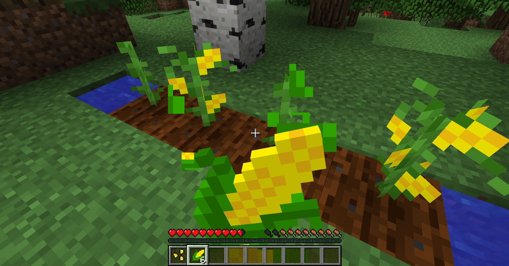

Агрокультурыlink
Гайд перевел и дополнил пользователь форума — AustereTony.
Приветствую. В этой статье речь пойдёт о создании собственных агрокультур. Будут рассмотрены примеры создания блока культуры, семян для выращивания и урожая - предмета, который будет выпадать с растения.
Я позволил внести себе некоторые правки в перевод и добавить дополнительной информации. Исходники доступны здесь. Приятного чтения.
Для большей ясности данный туториал будет разделён на три основные части:
- Блок агрокультуры
- Семена
- Урожай (выпадающий предмет)
Каждая часть будет рассмотрена независимо и код будет содержать ошибки, так как будут присутствовать ссылки на ещё не созданные объекты, но в конце они будут устранены.
В качестве примера создадим растение кукурузу, зёрна и початки. Приступим.
Блок агрокультурыlink
Давайте создадим класс под названием BlockCropCorn, который будет унаследован от ванильного BlockCrops и в связи с этим по своей механике будет схож с пшеницей. Что бы сделать агрокультуру более уникальной вы можете ознакомиться с суперклассом и поработать с добавляемыми им методами, их не так много. Наша агрокультура не будет иметь ItemBlock как и все остальные, а значит у неё не будет модели для предмета.
В этом классе нам необходимо переопределить два метода: getSeed() и getCrop(). Первый отвечает за выпадающие семена, второй за предмет-урожай, выпадающий при разрушении растения на финальной стадии созревания.
// ru.austeretony.crops.block.BlockCropCorn.java
public class BlockCropCorn extends BlockCrops {
private static final AxisAlignedBB[] CROPS_AABB = new AxisAlignedBB[] {
new AxisAlignedBB(0.4375D, 0.0D, 0.4375D, 0.5625D, 0.25D, 0.5625D),
new AxisAlignedBB(0.375D, 0.0D, 0.375D, 0.625D, 0.375D, 0.625D),
new AxisAlignedBB(0.375D, 0.0D, 0.375D, 0.625D, 0.5D, 0.625D),
new AxisAlignedBB(0.375D, 0.0D, 0.375D, 0.625D, 0.5625D, 0.625D),
new AxisAlignedBB(0.375D, 0.0D, 0.375D, 0.625D, 0.6875D, 0.625D),
new AxisAlignedBB(0.375D, 0.0D, 0.375D, 0.625D, 0.875D, 0.625D),
new AxisAlignedBB(0.3125D, 0.0D, 0.3125D, 0.6875D, 1.0D, 0.6875D),
new AxisAlignedBB(0.3125D, 0.0D, 0.3125D, 0.6875D, 1.0D, 0.6875D)
};
public BlockCropCorn(String cropName) {
this.setUnlocalizedName(cropName);
this.setRegistryName(cropName);
}
public AxisAlignedBB getBoundingBox(IBlockState blockState, IBlockAccess source, BlockPos position) {
return CROPS_AABB[(blockState.getValue(this.getAgeProperty())).intValue()];
}
@Override
protected Item getSeed() {
return ItemsRegistry.CORN_SEED;
}
@Override
protected Item getCrop() {
return ItemsRegistry.CORN;
}
protected int getBonemealAgeIncrease(World world) {
return MathHelper.getInt(world.rand, 1, 2);
}
public EnumPlantType getPlantType(IBlockAccess world, BlockPos position) {
return EnumPlantType.Crop;
}
}
Как видно конструктор имеет стандартный вид, методы регистрации имён получают их параметром из конструктора блока. Имя мы будем задавать во время регистрации.
Как было отмечено, getSeed() и getCrop() ссылаются но новые объекты, которые будут созданы позже.
Наш класс переопределяет getBoundingBox(), который возвращает разные AABB (объект, отвечающий за физические габариты блока) для каждого Property (свойства) из IBlockState (регистр свойств) блока. Наша агрокультура содержит одно унаследованное Property - "age", представляющее стадии роста - всего их восемь. Если вы хотите изменить количество стадий - создайте собственное Property и верните его в переопредлелённом getAgeProperty(). На каждой стадии роста растение имеет разные размеры и AABB различаются, getBoundingBox() возвращает нужную из массива, созданного в начале класса. Границы AABB в нашем случае определяются размером текстуры блока на разных стадиях роста.
Еще в этом классе переопределён getBonemealAgeIncrease(), отвечающий за то, на сколько стадий роста будет ускорено созревание при применении костной муки. В данном случае он рандомно вернёт значение ускорения на одну или две стадии.
Чтобы при затаптывании грядки с кукурузой она разрушалась, необходимо переопределить getPlantType() и вернуть EnumPlantType#Crop.
Теперь регистрация блока.
// ru.austeretony.crops.main.BlockRegistry.java
public class BlocksRegistry {
public static final Block
CROP_CORN = new BlockCropCorn("crop_corn");
public static void register() {
setBlockRegister(CROP_CORN);
}
private static void setBlockRegister(Block block) {
ForgeRegistries.BLOCKS.register(block);
}
}
Не забудьте вызвать метод register() в преините CommonProxy.
Теперь нужно создать файл блокстейта для нашей кукурузы. Создайте JSON файл crop_corn.json по пути "src/main/resources/assets/ваш modid/blockstates/"
{
"forge_marker": 1,
"defaults": {
"model": "cross"
},
"variants": {
"age": { "0": { "textures": { "cross": "crops:blocks/corn/stage_0" }},
"1": { "textures": { "cross": "crops:blocks/corn/stage_1" }},
"2": { "textures": { "cross": "crops:blocks/corn/stage_2" }},
"3": { "textures": { "cross": "crops:blocks/corn/stage_3" }},
"4": { "textures": { "cross": "crops:blocks/corn/stage_4" }},
"5": { "textures": { "cross": "crops:blocks/corn/stage_5" }},
"6": { "textures": { "cross": "crops:blocks/corn/stage_6" }},
"7": { "textures": { "cross": "crops:blocks/corn/stage_7" }}
}
}
}
Рассмотрим его содержимое подробнее.
forge_marker определяет версию блокстейта, всегда равен 1.
Блок defaults содержит указание на используемую модель. Мы будем использовать одну из ванильных моделей. Модель cross представляет собой две скрещенные текстуры (аналогично блокам травы). Вы можете использовать в качестве модели crop которую используют ванильные агрокультуры (в нашем случае для кукурузы лучше смотрится cross).
Блок variants используется для определения текстур, которые должен использовать блок с разными свойствами. В нашем случае свойство "age" использует разные текстуры для всех своих вариантов (восьми стадий роста).
Наша кукуруза использует ванильную модель блока и нет нужды создавать собственную.
Теперь нужно добавить текстуры. В соответствии с блокстейтом их должно быть восемь, скачайте их отсюда и разместите по пути "src/main/resources/assets/ваш modid/textures/blocks/corn/". Всё, с блоком разобрались.
Семенаlink
Давайте создадим семена для нашей кукурузы. Создадим класс ItemCornSeed, унаследуем его от ItemSeeds, содержать он будет только конструктор.
// ru.austeretony.crops.items.ItemCornSeeds.java
public class ItemCornSeeds extends ItemSeeds {
public ItemCornSeeds(String name) {
super(BlocksRegistry.CROP_CORN, Blocks.FARMLAND);
setUnlocalizedName(name);
setRegistryName(name);
}
}
В суперконструктор требуется передать объект блока агрокультуры, для которой эти семена предназначены, и "почву", на которой она должна расти. Опытным путём проверено, что второй параметр игрой успешно игнорируется и, независимо от того какой блок мы туда передадим, агрокультуру можно будет посадить только на блок грядки (Blocks#FARMLAND). В конце данного туториала я покажу как можно назначить свой блок для посадки. В остальном конструктор аналогичен конструктору блока.
Регистрируем предмет:
// ru.austeretony.crops.main.ItemsRegistry.java
public class ItemsRegistry {
public static final Item
CORN_SEED = new ItemCornSeeds("corn_seed").setCreativeTab(CreativeTabs.FOOD);
public static void register() {
setItemRegister(CORN_SEED);
}
@SideOnly(Side.CLIENT)
public static void registerRender() {
setItemRender(CORN_SEED);
}
private static void setItemRegister(Item item) {
ForgeRegistries.ITEMS.register(item);
}
@SideOnly(Side.CLIENT)
private static void setItemRender(Item item) {
ModelLoader.setCustomModelResourceLocation(item, 0, new ModelResourceLocation(new ResourceLocation(CropsMain.MODID, item.getUnlocalizedName().substring(5)), "inventory"));
}
}
Не забудьте вызвать метод register() в преините CommonProxy и registerRender() в преините ClientProxy.
Семенам требуется модель. Создайте JSON файл corn_seed.json в "models/item"
{
"parent": "item/generated",
"textures": {
"layer0": "crops:items/corn/corn_seed"
}
}
В нём указывается что необходимо использовать стандартно генерируемую модель и указанную текстуру для одного слоя.
Скачайте текстуру и разместите её по пути "src/main/resources/assets/ваш modid/textures/items/corn". Заметьте, мы создаём отдельную папку "corn" в папке текстур для предметов, связанных с кукурузой.
Что ж, идём дальше.
Урожайlink
В качестве дропа с кукурузы создадим… початок. Создаём ItemCorn и наследуем его от ItemFood, что бы он был полноценной едой.
// ru.austeretony.crops.items.ItemCorn.java
public class ItemCorn extends ItemFood {
public ItemCorn(String name, int hungerPointsRestoration, float saturationPointsRestoration, boolean isSuitableForWolves) {
super(hungerPointsRestoration, saturationPointsRestoration, isSuitableForWolves);
this.setUnlocalizedName(name);
this.setRegistryName(name);
}
}
В суперконструктор ItemFood нужно передать три параметра: кол-во единиц восстанавливаемого голода, значение насыщения и логическую переменную, которая определяет подходит ли данная еда для волков. Всё это будет определено в конструкторе при регистрации предмета.
Регистрируем предмет в классе регистрации предметов. При создании ItemCorn передаём имя, значение восполняемого голода (2 единицы), насыщение и false, если не хотим иметь возможность кормить волков кукурузой.
// ru.austeretony.crops.main.ItemsRegistry.java
public class ItemsRegistry {
public static final Item
CORN_SEED = new ItemCornSeeds("corn_seed").setCreativeTab(CreativeTabs.FOOD),
CORN = new ItemCorn("corn", 2, 0.6F, false).setCreativeTab(CreativeTabs.FOOD);
public static void register() {
setItemRegister(CORN_SEED);
setItemRegister(CORN);
}
@SideOnly(Side.CLIENT)
public static void registerRender() {
setItemRender(CORN_SEED);
setItemRender(CORN);
}
private static void setItemRegister(Item item) {
ForgeRegistries.ITEMS.register(item);
}
@SideOnly(Side.CLIENT)
private static void setItemRender(Item item) {
ModelLoader.setCustomModelResourceLocation(item, 0, new ModelResourceLocation(new ResourceLocation(CropsMain.MODID, item.getUnlocalizedName().substring(5)), "inventory"));
}
}
Теперь создаём модель и текстуру. Создайте JSON файл corn.json.
{
"parent": "item/generated",
"textures": {
"layer0": "crops:items/corn/corn"
}
}
Текстура:
Размещение аналогично семенам.
Локализацияlink
Не забудьте локализовать ваши предметы. В файл ru_ru.lang добавьте:
item.corn_seed.name=Семена кукурузы
item.corn.name=Початок кукурузы
Итогиlink
Вот так, теперь вы научились создавать агрокультуры. Зайдите в игру, достаньте семена из вкладки "еда" и посадите их на вскопанную грядку. Вырастите их мукой, сломайте - должны выпасть зёрна и початки. Початки вдобавок можно есть.

Дополнительноlink
Собственная почва для посадкиlink
Как было отмечено стандартный способ указать подходящую для посадки почву (блок) не работает. Если мы всё же хотим это сделать, то в первую очередь необходимо переопределить onItemUse() в классе семян. Рассмотрим его для начала:
public EnumActionResult onItemUse(EntityPlayer player, World world, BlockPos position, EnumHand hand, EnumFacing facing, float hitX, float hitY, float hitZ) {
ItemStack itemStack = player.getHeldItem(hand);
IBlockState blockState = world.getBlockState(position);
if (facing == EnumFacing.UP && player.canPlayerEdit(position.offset(facing), facing, itemStack) && blockState.getBlock().canSustainPlant(blockState, world, position, EnumFacing.UP, this) && world.isAirBlock(position.up())) {
world.setBlockState(position.up(), this.getPlant(world, position));
if (player instanceof EntityPlayerMP) {
CriteriaTriggers.PLACED_BLOCK.trigger((EntityPlayerMP) player, position.up(), itemStack);
}
itemStack.shrink(1);
return EnumActionResult.SUCCESS;
}
return EnumActionResult.FAIL;
}
Нас интерисует часть условия state.getBlock().canSustainPlant(). Вызов метода canSustainPlant() для блока на который мы ходим посадить наши семена вернёт true только для блока грядки. Просто вырезаем эту часть (или добавляем дополнительно нашу проверку) и заменяем сравнением блока с нужным. В итоге метод выглядит примерно так:
public EnumActionResult onItemUse(EntityPlayer player, World world, BlockPos position, EnumHand hand, EnumFacing facing, float hitX, float hitY, float hitZ) {
ItemStack itemStack = player.getHeldItem(hand);
IBlockState blockState = world.getBlockState(position);
if (facing == EnumFacing.UP && player.canPlayerEdit(position.offset(facing), facing, itemStack) && blockState.getBlock() == Blocks.GRASS && world.isAirBlock(position.up())) {
world.setBlockState(position.up(), this.getPlant(world, position));
if (player instanceof EntityPlayerMP) {
CriteriaTriggers.PLACED_BLOCK.trigger((EntityPlayerMP) player, position.up(), itemStack);
}
itemStack.shrink(1);
return EnumActionResult.SUCCESS;
}
return EnumActionResult.FAIL;
}
Теперь необходимо удостоверить нашу агрокультуру, что она может расти на указанном блоке. В классе блока переопределяем canBlockStay() и заменяем аналогичный вызов проверки на сравнение блока со своим. Итог:
public boolean canBlockStay(World world, BlockPos position, IBlockState state) {
IBlockState soil = world.getBlockState(position.down());
return (world.getLight(position) >= 8 || world.canSeeSky(position)) && soil.getBlock() == Blocks.GRASS;
}
Теперь вы можете сажать свою агрокультуру только на траву.